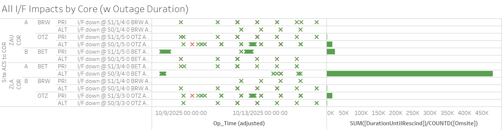
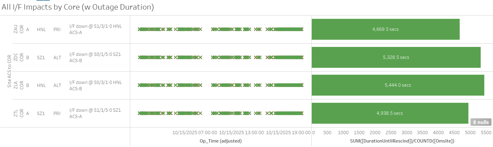

Weekly Highlights 20251008-20251015
10/1 & 10/8 - AP1 Tap Tool Port Reset
- 10/1 13:21 - AP1 GUS Tool Port Down / Up (monitoring port only)
- 10/8 16:57 - AP1 Network Tap B Tool Port Down / Up (external monitoring)
- 10/9 15:30 - AP1 Network Tap B Tool Port Down / Up (external monitoring)
10/8-10/15 - ZDC Ring 1 Comm Flapping / ZDC-ZAU Ring 1 PRI Down Hard
- 10/8 07:24 - ZDC Ring 1 Core comms flapping to NOC
PRI/ALT, ZAU PRI, ZTL PRI, BR1 PRI/ALT, JNU ALT,
YFB Serial
- 10/8 14:03 - Reset ZDC Ring 1 Core Router; flapping lines did not clear...
- 10/8 16:13 - Last events cleared (~8462 seconds total); ref LAD 1068042224
- 10/10 03:41 - ZDC Ring 1 Core comms flapping to NOC PRI/ALT, ZAU PRI, ZTL PRI, BR1 PRI/ALT, JNU ALT, YFB Serial (same comms as before); last events cleared at 10/10 16:26 (~15233 seconds total)
- 10/11 07:25 - ZDC Ring 1 Core comms flapping to NOC PRI/ALT, ZAU PRI, ZTL PRI, BR1 PRI/ALT, JNU ALT, YFB Serial (same comms as before); last events cleared at 10/11 15:07 (~3428 seconds total)
- 10/12 05:32 - ZDC Ring 1 Core comms flapping to NOC PRI/ALT, ZAU PRI, ZTL PRI, BR1 PRI/ALT, JNU ALT, YFB Serial (same comms as before); last events cleared at 10/12 15:35 (~4964 seconds total)
- 10/13 17:21 - ZDC-ZAU Ring 1 PRI comms down hard
after comm event which affected several other
comms for ~20 seconds: NOC PRI/ALT, ZAU PRI, ZTL
PRI, BR1 PRI/ALT, JNU ALT, YFB Serial (same
comms as before)... ZSU Ring 1 PRI momentarily
cleared (~92437 seconds) before going back down
hard...
ISR 1009-1332-- ref LIR 1068505824- 10/13 20:18 - ZDC-ZAU Ring 1 PRI comms cleared momentarily (~10623 seconds)
- 10/13 20:20 - ZDC Ring 1 Core comms
flapping to NOC PRI/ALT, ZAU PRI,
ZTL PRI, BR1 PRI/ALT, JNU ALT, YFB
Serial (same comms as before) + ZSU
Ring 1 PRI comms flapping...
- ZDC-ZAU Ring 1 PRI is flapping at a faster rate than the rest...
- ZSU Ring 1 PRI comms are alternately flapping ON when the rest are flapping OFF...
- 10/14 05:45 - Lines cleared (~2790 seconds total for most) except for ZAU Ring 1 PRI and ZSU Ring 1 PRI comms down hard...

10/13 - YFB WRE-B Fault
- 10/13 03:46 - YFB WRE-B Faulted with SEs 52, 53, 59; Control Powered and restored to Normal at 10/13 04:29
10/14 - CM1 GUS Faulted During Switchover
- 10/14 07:26 - GUS Switchover -
S15 - BR1 GUS to Backup Mode, but
CM1 Faulted instead of changing to Primary -- looks
like RFU failed to transition; ref LIR
1070325624; BR1 GUS changed back to
Backup Mode
- 10/14 07:34 - CM1 GUS Shutdown and Control Powered; restored to Backup at 10/14 08:20
- 10/14 18:36 - CM1 GUS to Maintenance Mode for
CM1 Emergency CM R&R SW4 waveguide switch-- ref LIR 1188596532; Control Powered, no TLT Verification, and restored to Backup at 10/14 20:32
10/14 - SZ1 GUS Fault with SE 44 L1 GEO Downlink Msg Check Fault
- 10/14 11:58 - GUS Switchover -
SM9 - SZ1 GUS Faulted from
Primary Mode with SE 44 L1 GEO Downlink Msg
Check Fault, SEs 86,87 Rcvr OMNI/DRCT CardStat
Not Rcvd, and SEs 88,89 Rcvr OMNI/DRCT UDP Comm
Fail; DX1 automatically changed to Primary
GRUP_cnmp.c:1208 11:31:39 10/14/2025 GRMA AIX / E-GR_MP_EXCEED_TIMEOUT_LMT "Multipath data has been timed out for prn 131 (prn_idx = 32)"- 10/14 12:18 - SZ1 GUS Shutdown and Control Powered; restored to Backup at 10/14 13:05
10/14 - BR2 GUS RFU Maintenance
- 10/14 16:03 - BR2 GUS to Maintenance Mode
to perform SA RFU maint. Intrusive.-- ref LIR 1049197024; Control Powered, then Restarted after Verification Mode (TLT performed); restored to Backup at 10/14 19:47
10/15 - BR1 GUS Maintenance
- 10/15 04:48 - GUS Switchover - S15 - CM1 to Primary / BR1 to Backup in preparation for periodic maintenance
- 10/15 15:02 - BR1 GUS to Maintenance for
Intrusive Semi-Annual Antenna and KPA maintenance-- ref LIR; Control Powered and restored to Backup at 10/15 18:56 (no TLT performed)
L1/L2 Bias Errors

Various Comm Impacts
* Only captures major / long-term comm outages
CM1 Comms
- 10/7 16:19 - CM1 Ring 2 PRI comms
flapping; down hard at 10/7 18:26;
OTS after MR-212954B-- ref LIR 1067346924... - 10/7 18:26 - CM1 Ring 1 ALT comms down
hard;
OTS after MR-212954B-- ref LIR 1067346024... - 10/10 23:07 - CM1 Ring 1 ALT / Ring 2 PRI comm lines cleared (~276081 seconds)
BET/BRW/OTZ comms
- 10/9 02:55 - OTZ both Rings PRI / ALT down hard; all lines cleared at 10/9 02:57 (~152 seconds)
- 10/9 13:23 - OTZ Ring 1 ALT / Ring 2 PRI comms down hard; both lines cleared at 10/9 20:28 (~25470 seconds)
- 10/12 06:42 - BET Ring 2 PRI comms flapping; line
down hard at 10/12 13:22...
ISR 1011-0680-- ref LIR 1069365624 - 10/12 12:12 - OTZ Ring 1 ALT / Ring 2 PRI comms flapping; last events cleared at 10/12 17:13 (~4991 seconds total)
- 10/12 20:00 - BET + BRW + OTZ Ring 1 PRI / Ring 2 ALT comms down hard; all lines cleared by 10/12 20:12 (~496 seconds max)
- 10/13 15:44 - BET Ring 1 ALT comm line cleared (~475029 seconds)
- 10/13 19:48 - BET Ring 1 ALT comms down hard; line cleared at 10/13 19:57 (~537 seconds)
- 10/13 20:00 - BET + BRW + OTZ Ring 1 PRI / Ring 2 ALT comms down hard; all lines cleared by 10/13 20:13 (~549 seconds max)
- 10/14 00:34 - BET + BRW + OTZ Ring 1 PRI / Ring 2 ALT comms down hard; all lines cleared by 10/14 00:47 (~749 seconds max)
- 10/15 00:33 - BET + BRW + OTZ Ring 1 PRI / Ring 2 ALT comms down hard; all lines cleared by 10/15 00:38 (~280 seconds max)
- 10/15 00:39 - OTZ Ring 1 PRI / Ring 2 ALT comms flapping; last event cleared at 10/15 00:45 (~688 seconds total)
- 10/15 20:01 - OTZ Ring 1 PRI / Ring 2 ALT + BRW Ring 1 PRI / Ring 2 ALT; all lines cleared at 10/15 20:12 (~569 seconds)

SZ1 / HNL Comms
- 10/8 21:36 - HNL Ring 1 PRI / Ring 2 ALT + SZ1 Ring 1 PRI / Ring 2 ALT comms flapping; last events cleared at 10/8 21:55 (~212 seconds total)
- 10/14 23:54 - HNL Ring 1 PRI / Ring 2 ALT + SZ1 Ring 1 PRI / Ring 2 ALT comms flapping...

Other Sites
- 10/9 06:12 - ZAB Ring 1 PRI / Ring 2 ALT comms
down hard;
MR-211979A - L3Harris will Transition CKTS on primary path to new Fujitsu FW4100-ESs-- ref LIR 1064560924; both lines cleared at 10/9 07:15 (~3769 seconds) - 10/9 07:03 - ZDC Ring 1 Core comms flapping to NOC
PRI/ALT, ZAU PRI, ZTL PRI, BR1 PRI/ALT, JNU ALT,
YFB Serial (same comms as 10/8);
ISR 1009-1332-- ref LIR 1068505824...- 10/9 13:24 - DX1 Ring 1 ALT comms to ZDC Ring 1 Core starts flapping
- 10/9 17:45 - All flapping lines last events cleared (~5678 seconds total)
- 10/9 13:23 - YYR Ring 1 comms down hard; line cleared at 10/10 05:09 (~56772 seconds)
- 10/9 14:19 - ZTL-ZLA Ring 2 PRI comms down hard... ref LIR 1068669824
- 10/9 14:36 - MTP Ring 1 comms down hard; line cleared at 10/9 20:36 (~5h 9m)
- 10/10 03:47 - NOC-ZDC Ring 1 PRI comms down hard; line cleared at 10/10 04:07 (~1195 seconds)
- 10/10 10:07 - NOC-ZDC Ring 1 PRI comms down hard; line cleared at 10/10 10:17 (~598 seconds)
- 10/12 12:49 - DX1 Ring 1 ALT comms flapping; last event cleared at 10/12 15:22 (~248 seconds total)
- 10/12 15:40 - ZSU Ring 1 PRI / Ring 2 ALT comms
down hard...
ISR 1012-0548-- ref LIR 1069735024 - 10/13 06:06 - ZAB Ring 1 ALT / Ring 2 PRI comms flapping with extended down hard; last events cleared at 10/13 07:39 (~5159 seconds total)
- 10/13 09:59 - CDB Ring 1 comms flapping; last event cleared at 10/13 16:16 (~817 seconds total)
- 10/13 17:56 - CDB Ring 1 comms down hard; line cleared at 10/13 19:07 (~4230 seconds)
- 10/13 19:46 - CDB Ring 1 comms down hard; line cleared at 10/13 19:59 (~775 seconds)
- 10/13 23:14 - CDB Ring 1 comms down hard; line came back up to flapping at 10/13 23:45 (~1844 seconds), then down hard at 10/13 23:48; line cleared at 10/14 00:05 (~1029 seconds)
- 10/13 14:20 - ZLA-POC Ring 1 PRI / Ring 2 ALT
comms down hard... ref LIR
209239321
- 10/13 15:36 - ZLA COR-A Reset; down comms did not clear...
- 10/13 15:54 - ZLA COR-B Reset; down comms did not clear...
- 10/14 00:07 - CDB Ring 1 comms down hard; line cleared at 10/14 00:16 (~546 seconds)
- 10/14 15:54 - DX1 Ring 1 PRI / Ring 2 ALT comms flapping...
- 10/14 20:43 - ZSU Ring 1 PRI / Ring 2 ALT comms momentarilry rescinded (down since 10/12) then back down hard again...
- 10/15 11:42 - ZSU Ring 1 PRI / Ring 2 ALT
comms cleared (~53834 seconds since
previous rescind)
ISR 1012-0548closed -- ref LIR 1069735024- 10/15 16:10 - ZSU Ring 1 PRI / Ring 2 ALT Comms flapping with loopbacks; both lines cleared at 10/15 17:25 (~3538 seconds total)
- 10/15 15:37 - All MX Ring 1 Comms down hard; lines cleared at 10/15 15:46 (~9m 29s)
10/7/25 CM1 Ring 1 ALT / Ring 2 PRI Comms
- 10/7 16:19 - CM1 Ring 2 PRI comms
flapping; down hard at 10/7 18:26;
OTS after MR-212954B-- ref LIR 1067346924... - 10/7 18:26 - CM1 Ring 1 ALT comms down
hard;
OTS after MR-212954B-- ref LIR 1067346024...
10/7/25 BET Ring 1 ALT Comms
- 10/7 14:01 - BET Ring 1 ALT / Ring 2
PRI comms flapping
- 10/7 23:00 - Reset port for BET Ring 1 ALT
- 10/8 00:14 - Reset port for BET Ring 2 PRI
- 10/8 03:46 - BET Ring 1
ALT comms down hard;
ISR 1007-1808 - storm in the area that could be affecting service.-- ref LIR 1067310524...
- 10/12 06:42 - BET Ring 2 PRI comms
flapping; line down hard at 10/12
13:22...
ISR 1011-0680-- ref LIR 1069365624 - 10/13 15:44 - BET Ring 1 ALT comm line cleared (~475029 seconds)
10/14/25 ZDC-ZAU Ring 1 PRI Comms
ISR 1009-1332
-- ref LIR
1068505824
- 10/13 17:21 - ZDC-ZAU Ring 1 PRI comms
down hard after comm event which
affected several other comms for ~20
seconds: NOC PRI/ALT, ZAU PRI, ZTL
PRI, BR1 PRI/ALT, JNU ALT, YFB
Serial (same comms as before)... ZSU
Ring 1 PRI momentarily cleared
(~92437 seconds) before going back
down hard...
- 10/13 20:18 - ZDC-ZAU Ring 1 PRI comms cleared momentarily (~10623 seconds)
- 10/13 20:20 - ZDC Ring 1
Core comms flapping to
NOC PRI/ALT, ZAU PRI,
ZTL PRI, BR1 PRI/ALT,
JNU ALT, YFB Serial
(same comms as before) +
ZSU Ring 1 PRI comms
flapping...
- ZDC-ZAU Ring 1 PRI is flapping at a faster rate than the rest...
- ZSU Ring 1 PRI comms are alternately flapping ON when the rest are flapping OFF...
- 10/14 05:45 - Lines cleared (~2790 seconds total for most) except for ZAU Ring 1 PRI and ZSU Ring 1 PRI comms down hard...
- 10/15 20:30 - CN0009 performed on ZDC COR-A for ZAU Ring 1 PRI comms down -- loop event indicates port is ok; loop cleared at 10/15 20:40, but comm line still down hard...
10/13/25 POC-ZLA Ring 1 PRI Comms
- 10/13 14:20 - ZLA-POC Ring 1 PRI /
Ring 2 ALT comms down hard... ref LIR
209239321
- 10/13 15:36 - ZLA COR-A Reset; down comms did not clear...
- 10/13 15:54 - ZLA COR-B Reset; down comms did not clear...
10/12/25 BET Ring 2 PRI Comms
- 10/12 06:42 - BET Ring 2 PRI comms
flapping; line down hard at 10/12
13:22...
ISR 1011-0680-- ref LIR 1069365624
7/21/25 YYR Ring 1 Comms
- 7/21 11:44 - YYR Ring 1 comms flapping with extended outages... -- ref LIR 1020579524
- 7/21 14:50 - YYR Ring 1 comms down hard...
- 7/30 -
SATCOM issue YYR<->QWE. YYR tech found broke cable connector on back of receive modem. researching part. - 8/20 Remark: Noted increase of L1/L2 Bias Errors for YYR and frequent flaps to No Data Reported...
11/6/24 YFB Ring 2 Down Hard...
YFB requires satcom upgrades by NavCanada to restore... ref LIR 892056924
- 11/6/24 18:48 - YFB Ring 2 down hard... both rings to YFB down hard...
5/11/23 Mexico Ring 2 Down Hard...
- 5/11/23 17:01 - MX Ring 2 SatCom upgrade begins; MX Ring 2 OFFLINE until upgrade troubleshooting is complete...
- Targeting network upgrade in CY26
List of current offline WREs
List of current offline WREs -- ref WAAS Status Monitor
All Depot shipments to Mexico are halted until the customs process can be finalized
Currently working to assess MX Inventory to determine equipment refresh and restoration needs...
- MTP WRE-A - 9/23/25-... - PCU Failed after power outage; PCU-B swapped into WRE-A but DC output is non-functional... ref LAD 1060696524
- MMD WRE-A - 3/31/25-... - Freq Std failed -- ref LIR 953873324
- MTP WRE-B - 11/18/24-... - Receiver inits failing -- ref LIR 898330924
- MPR WRE-B - 5/3/24-... - Inits failing -- looks like a bad freq std; due to shipping issues, there is no spare Freq Std and no ETA to recover WRE-B... -- ref LIR 44170821

Major Events


Core I/F Status

Comm Events

Mexico Comm Status